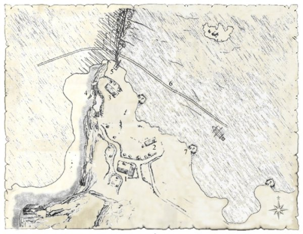
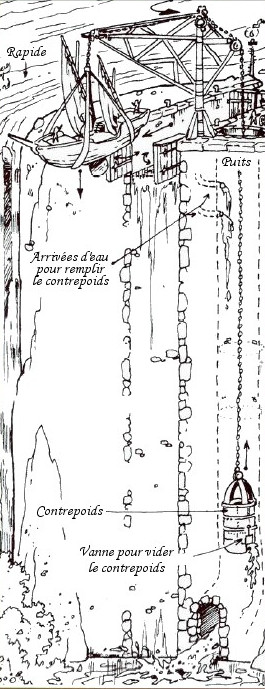

La Divine Écluse
RÉFÉRENCE
À titre de comparaison, les chutes Victoria tombent également d'environ 110 mètres de haut. Celles du Niagara ne font « que » 50 mètres.
À la jonction des deux lacs de Laelith se trouve une des fiertés de la technologie naine : la Divine Écluse. Cet ouvrage imposant permet aux embarcations de taille modeste de franchir les 110 mètres de dénivelés séparant le lac d'Altalith et le lac des Hautes Eaux. Située entre le matriarcat d'Olizya et les jardins de Jadhys, la Divine Écluse est une enclave régit directement par la cité de Laelith. Lorsque l'on arrive à proximité, la première chose que l'on perçoit est le bruit assourdissant des eaux qui se déversent le long d'une impressionnante falaise. La vue de cette gigantesque cascade fait ensuite prendre pleinement conscience de la différence de niveau entre les deux lacs.
La légende
1075. Galianthrill, fier charpentier nain de son état, pris par on ne sait quelle folie, succomba aux charmes délicieux d'une jeune prêtresse naine. Celle-ci officiait au temple du Crâne de Laelith et, comme le reste des consœurs de son ordre, il lui était interdit de s’adonner aux plaisirs de la chair et de partager sa couche avec un homme. Une telle perfidie devait trouver juste châtiment mais, pour d'obscures raisons (un miracle dira plus tard le nain), le Roi-Dieu insista pour que le jugement des deux amants se passe devant la Cour Commune et non pas devant le tribunal du Crâne, connu pour sa sévérité et ses jugements aux sentences souvent radicales. Toutefois, la gravité des faits et la culpabilité étant reconnues par les deux accusés, la prêtresse fut excommuniée et chassée du temple dans la honte, tandis que Galianthrill fut lui condamné à servir gratuitement la cité sainte pour les 13 années qui suivirent.
Mais le nain n'avait qu'un goût modéré pour le balayage des échelles et la récupération des ordures. C'est pourquoi il implora les juges de le laisser réaliser un projet qui lui tenait à cœur depuis sa plus tendre enfance. Ce pauvre fou voulait construire en 13 ans une écluse qui relierait Altalith au lac des Hautes Eaux. Les juges, malgré leur perplexité sur la réussite de l'entreprise, acceptèrent, car un tel projet, aussi fou soit-il, pouvait apporter énormément à Laelith en cas de succès. Et indirectement, ce succès rejaillirait sur eux. Galianthrill quitta donc la cité sainte à dos de ookhabs, sous les cris railleurs de la population ne voyant en lui qu'un pauvre fou. Il gagna ainsi la séparation des deux lacs et commença l'élaboration des plans. Ceux-ci furent terminés rapidement car Galianthrill avait déjà imaginé plusieurs fois le mécanisme à mettre en oeuvre. Il se rendit ensuite en forêt pour collecter tout le bois dont il avait besoin, mais après trois années de dur labeur à marteler inlassablement l'écorce des arbres, Galianthrill se rendit compte de son impétuosité. Seul, il ne terminerait jamais dans les temps, il en aurait pour plus d'un siècle avant de parachever son oeuvre. Et il se mit à désespérer.
Heureusement un deuxième miracle se produisit. Au fur et à mesure des années, les railleries s'étaient tues, faisant place au respect devant l'opiniâtreté du nain. Les gens étaient maintenant attristés de savoir qu'il allait renoncer à son projet. Les nains de la colonie des falaises de Vorn décidèrent alors d'envoyer nombre de jeunes auprès de Galianthrill, afin qu'ils apprennent les techniques ancestrales des charpentiers nains. Devant cette aide miraculeuse, le charpentier repris courage, redoubla d'effort, et finit par terminer l'écluse à temps. Et en 1088, 13 ans jour pour jour après l'annonce de la sentence, tout le beau monde de Laelith vint inaugurer l'écluse. Le nouveau Roi-Dieu, Coloquinte II, fut véritablement impressionné par les travaux des nains, et confia l'exploitation de l'ouvrage à Galianthrill et à sa famille. La famille prospéra alors, et devint même riche. L'ouvrage reçut le nom de Divine Écluse en raison des miracles qui avaient permis de mener à terme ce projet.
Le clan de l'Écluse

À quelques pas de l'écluse se dressent plusieurs bâtiments, tous construits en pierre et appartenant au même petit clan nain : le clan de l'Écluse.
1. La maison du clan
La taverne de l'Écluse. L'établissement est principalement visité par les marins, qui peuvent s'y détendre et se restaurer pendant qu'on monte ou qu'on descend leur embarcation. À ne pas rater la spécialité de l'établissement, le chtroudeul, une imposante assiette de cochonnailles aux algues fabriquées par les fermiers locaux. La taverne ouvre au lever du soleil et ferme en gros trois heures après le coucher de celui-ci. L'établissement ne propose pas de lit, car tous les bateaux se débrouillent pour arriver à l'écluse de jour afin de passer d'un lac à l'autre rapidement, et les rares marins qui arrivent au coucher du soleil dorment dans leurs bateaux. La demande en lit est donc presque nulle.
La chambre de Galianthar et Diesa. C'est ici, au rez-de-chaussée, que dorment les deux nains gérants de la Divine Écluse.
L'étage. De taille plus modeste que le rez-de-chaussée, on y trouve trois chambres. Celle des deux cousins Erbek et Gloïn, celle de Borik et de ses deux apprentis Veit et Ulfnar, et celle toute petite d'Idle, la fille de Galianthar.
La remise. On entrepose ici toute la nourriture et la boisson nécessaire au fonctionnement de la taverne.
POUR LE MD
Le magasin ne propose aucun objet magique à la vente, mais possède par contre plusieurs objets exotiques, troqués par des voyageurs venant de pays lointains.
Le magasin. En plus de proposer aux marins et voyageurs de passage nourriture et boisson, le clan propose aux aventuriers en tout genre de refaire un peu leur stock d'équipement. On y trouve donc de nombreuses fournitures comme des cordages, de l'encre, des rations, des outils d'excavations, des sacs, des vêtements et beaucoup d'autres choses, à un prix raisonnable. Les nains du clan de l'Écluse sont de grands adeptes du troc également.
2. L'atelier du charpentier
Le charpentier nain Borik est le responsable de la maintenance de l'ouvrage, et il travaille dessus en permanence. Ce bâtiment toujours bien rangé est donc son atelier. C'est également lui qui reçoit toutes les fournitures en provenance de Laelith, lesquelles sont ensuite stockées dans l'entrepôt. Borik a actuellement avec lui deux apprentis qui travaillent aussi sur l'écluse et à qui il transmet chaque jour un peu de son savoir.
3. L'entrepôt
Ici que sont stockées toutes les marchandises reçues de la cité sainte. Laelith prend en effet à sa charge tous les frais de maintenance de l'écluse, et envoie donc à ce titre tous les mois une quantité impressionnante de fournitures en tout genre. Les taxes perçues par les nains pour le passage sont donc juste une rétribution qui correspond au service d'exploitation qu'ils donnent. En fait, la Divine Écluse est un élément important pour l'économie de la cité, les deux lacs constituant la principale route commerciale de Laelith. Le pouvoir de la cité sainte se montre donc avenant avec les nains qui l'exploitent, craignant qu'un jour une colère naine ne leur fassent fermer les vannes, ou pire, saboter l'ouvrage.
4. L'escalier
Il faut noter que de nombreux bateaux ne franchissent pas l'écluse, mais effectue seulement un transfert de leurs passagers et/ou de leur cargaison à cet endroit, un bateau du lac d'Altalith se mettant simplement d'accord avec un bateau du lac des Hautes Eaux pour arriver à l'écluse au même moment. L'écluse met même à disposition un petit bateau pour monter ou descendre les passagers. Pour ceux qui ne veulent pas payer ou bien tous ceux qui préfèrent éviter de se retrouver suspendus en l'air, il y a, taillé dans la falaise, un escalier qui relie les deux pontons, celui du bas et celui du haut.
5. L'écluse
La grue. C'est l'élément essentiel de l'écluse, celui qui permet de faire monter ou descendre les navires. Seuls les bateaux mesurant moins de 20 mètres peuvent passer par l'écluse, et donc naviguer d'un lac à l'autre. Cette grue est actionnée par un système de contrepoids.
Le contrepoids. Une immense cloche de bronze, reliée par une chaîne à la grue, permet l'ascension ou la descente des bateaux. Pour l'ascension, on remplit d'eau cette cloche, et pour la descente, on la vide. Une vanne permet d'ouvrir une bouche dans l'écluse qui permet alors de remplir la cloche directement avec l'eau du lac des Hautes Eaux.
L'écluse. C'est ici que sont amarrés les navires à la grue. L'opération prend en général une demi-heure. Jebbedo Nackle, un magicien gnome, invoque souvent un élémentaire de l'eau pour aider à harnacher un bateau à l'aide de chaînes que l'on fait passer sous les coques. L'ascension ou la descente prend ensuite en général pas moins de 15 minutes.
Les manivelles. Ces deux manivelles permettent de fermer ou d'ouvrir les deux vannes de l'écluse : le bateau entre, on vide l'eau en ouvrant la vanne du bas, puis le bateau est descendu, ou bien à l'inverse, le bateau est hissé, puis on ouvre la vanne du haut pour remplir le bassin d'eau.
L'ascenseur. Afin d'éviter de devoir utiliser un petit bateau pour le transfert des passagers d'un lac à l'autre, un ascenseur est en cours de réalisation, utilisant le même principe que la grue. Il reste encore environ 6 mois de travaux avant qu'il ne soit opérationnel.
6. La digue
Cette avancée de terre d'environ 300 mètres permet aux navires d'échapper aux courants de la chute, en amont et en aval, et de les protéger des vents violents sévissant dans la région. Quelques milles avant les chutes, les navires commencent donc à se rapprocher de la rive sud des lacs pour rejoindre cette digue. De là, il faut compter une trentaine de minutes pour rejoindre l'écluse en toute sécurité. En effet, les embarcations doivent en premier lieu être amarrées, puis ensuite un des nains de l'écluse monte à bord pour prendre la barre du navire et le mener jusqu'à l'écluse sans encombre.
7. Les trois lucioles
Ce sont trois importants portiques en bois installés sur la rive du lac des Hautes Eaux, espacés les uns des autres d'une centaine de mètres, et surmontés d'une cloche en verre. À l'intérieur de chacune d'elles une lumière magique clignote à intervalle régulier. Celles-ci ont pour but de guider les navires faisant route vers la Divine Écluse et de les avertir, de jours comme de nuit, de rapidement rejoindre la digue au sud pour éviter d'être pris dans les violents courants de la chute. Ces trois lumières ont été surnommées par les marins les « trois lucioles » en référence aux clignotements de ces insectes.
Personnalités
Le clan de l'Écluse, tableau peint par le demi-elfe Wisard.
De gauche à droite on reconnaît Diesa et Galianthar, les cousins Erbek et Gloïn, en train de boire une bonne bière, et Idle, la fille de Galianthar.
Galianthar. Descendant direct de Galianthrill, ce nain largement centenaire à la longue barbe grise gère les affaires de la Divine Écluse avec intelligence. C'est un commerçant habile dans les négociations et peu arriveront à lui faire payer au-dessus du prix qu'il s'est fixé pour une marchandise. Il apprécie toujours la compagnie à sa table d'autres nains de passage à l'écluse. La famille est pour lui une chose sacrée, et il n'a pas oublié ce que son clan doit à la colonie de Vorn. Il leur envoie d'ailleurs de nombreux présents chaque année. Généralement il passe son temps au magasin, ou bien à piloter les embarcations jusqu'à l'écluse. Dans ce dernier cas, c'est sa fille qui le remplace au magasin.
Diesa. Femme de Galianthar, véritable âme de l'établissement, elle gère sa taverne avec fermeté et efficacité. C'est son tempérament de feu qui a séduit Galianthar il y a de nombreuses années. Ses expressions sont devenues célèbres, comme « tant que le Saghiann ne nous tombe pas sur la tête ». Toute sa petite famille la respecte énormément et gare à celui qui aurait un mot déplaisant envers la tenancière, il risquerait d'avoir droit à une sortie plutôt douloureuse.
Idle. Fille unique du couple de gérants, elle est amenée à prendre la suite familiale. C'est pourquoi elle est en permanence derrière son père et sa mère pour apprendre les ficelles du métier. Cette jeune naine (30 ans) a hérité de la répartie matriarcale et exerce déjà sur les autres nains une réelle autorité. À part un goût prononcé pour le chocolat qui lui cause quelques surcharges pondérales, Idle se démène avec enthousiasme pour le bon fonctionnement de l'écluse.
Borik. Originaire de la colonie des falaises de Vorn, ce nain de 250 ans est le descendant d'un des premiers nains à être venu aider Galianthrill. Il vit depuis toujours à l'écluse. Aujourd'hui c'est l'un des meilleurs maîtres charpentiers de la région. Il est plutôt rude avec ses élèves, mais si ceux-ci se révèlent appliqués et courageux ils obtiendront facilement des conseils avisés du maître. Afin de renforcer les liens avec ses apprentis, il dort dans la même chambre qu'eux. Cette situation plutôt embarrassante pour les jeunes nains au départ est aujourd'hui bien acceptée, et les deux apprentis Veit et Ulfnar, arrivés il y a deux ans de la colonie de Vorn, ont bien progressé depuis leur début.
Les cousins Erbek et Gloïn. Arrivés en même temps que les deux apprentis, Erbek et Gloïn sont deux frères ayant un lien de parenté éloigné avec Galianthar. Ils ont été envoyés par la colonie de Vorn pour assurer la sécurité de l'écluse. Ce sont tous deux de valeureux guerriers, l'un avec son marteau de guerre et l'autre avec sa hache. Bons vivants et aimant la bonne bière, ce sont de redoutables adversaires au combat au corps à corps, et rares sont ceux qui ont la folie de mal se tenir en leur présence. Les derniers ont eu la peau des fesses tannée par leurs bottes.
La grotte de Jebbedo
LA MOUCHE DES EAUX
Dans la région du lac des Hautes Eaux sévit une mouche très petite. Sa morsure, bénigne au premier abord, provoque chez les sujets allergiques une rapide tuméfaction des tissus. La victime rougit et double alors de volume avant de décéder suite à des lésions internes. Quelques heures après le décès, le corps continue toujours de gonfler, jusqu'à l'explosion.
Les cas d'allergie à la mouche des Hautes Eaux sont heureusement très rares (1 personne sur 1000 environ) et le remède, à base d'algues, connu. Celui-ci doit toutefois être administré dans les plus brefs délais pour être efficace. On le trouve notamment en vente au magasin de la Divine Écluse (50 po la dose).
Préférant s'isoler pour se consacrer à son art, Jebbedo Nackle vit dans une grotte à quelques centaines de mètres au nord de la Divine Écluse. Le gnome retrouve ainsi les souterrains de ses ancêtres, les gnomes des profondeurs. Sa grotte est remplie d'objets curieux et extravagants, à l'image de leur propriétaire vêtu en permanence de vêtements aux couleurs aveuglantes.
Personnalités
Jebbedo Nackle. Ce magicien gnome de 200 ans a été envoyé par la cité sainte pour aider les nains dans leur entreprise. Il vit dans une grotte, ce qui lui permet de se sentir plus proche de ses ancêtres. Son sort préféré est l'invocation d'élémentaire d'eau qui lui permet d'harnacher les navires. Mais depuis peu, Jebbedo a une autre occupation : former la jeune Gaëlle. Aussi curieuse que lui, sinon plus, il ne pensait pas un jour qu'il dirait à quelqu'un de patienter. Bien que vivant dans sa grotte, il ne dédaigne pas pour autant les plaisirs gastronomiques, et chaque soir il vient s'attabler avec les nains pour déguster les mets de Diesa.
La ferme de Sven
À deux kilomètres au nord de l'écluse, près du village de Borgnefesse, se trouve la ferme de Sven Olafson. Celui-ci travaille maintenant exclusivement pour les nains du clan de l'Écluse qui l'ont chargé de fournir en denrées alimentaires et spécialités la taverne. Il est aidé de sa femme, de ses trois filles et de son fils. Les activités principales de la ferme sont l'élevage de cochons et la confection de charcuterie à base d'algues. Sven cultive les terres servant à l'alimentation de ses porcs et abat les bêtes arrivées à maturité, sa femme nourrit les bêtes, et deux de ses filles fabriquent la charcuterie. Son fils quant à lui passe son temps sur la barque pour aller ramasser les algues au goût si particulier qui font la renommée du chtroudeul. Leur première fille, plus intelligente que la moyenne, a été prise comme apprentie par le gnome Jebbedo, le magicien de l'écluse. La ferme est modeste, mais les fermiers ne manquent de rien, les nains y veillent.
Personnalités
Sven Olafson. À 40 ans, cet homme courageux et bienveillant travaille ardemment pour faire fonctionner sa ferme et combler sa famille. Sa peau est marquée par le travail en extérieur, et contraste avec la blondeur de ses cheveux. Originaire des jardins de Jadhys, il était connu comme un des meilleurs éleveurs de la région, et c'est la raison pour laquelle les nains le contactèrent pour élever leurs cochons. Il est seulement propriétaire de sa maison, les terres appartiennent au matriarcat d'Olizya. Cependant, grâce aux richesses accumulées au cours des siècles, les nains lui ont déjà acheté un lopin de terres dans sa région natale, pour le remercier de ses bons et loyaux services le jour où il ne pourra plus travailler à cause de l'âge.
Carla Olafson. La femme de Sven, âgée de 36 ans, et à la fois douce et impitoyable. Elle n'élèvera jamais la voix contre ses enfants, mais ses répliques sont aussi cinglantes qu'efficaces. Toutefois il faut vraiment que la situation soit grave pour qu'elle en arrive à de telles extrémités. Voilà maintenant 20 ans qu'elle est mariée à Sven. Sous ses apparences frêles, elle recèle une véritable force de caractère et gère avec autorité la production de charcuterie. Mise à part Gaëlle, ses trois autres enfants sont Bjorn (18 ans), Cléa (14 ans) et Jasmine, la cadette (12 ans).
Gaëlle. Bien que blonde (!), elle est de loin et du haut de ses 16 ans la plus intelligente des quatre enfants de la famille Olafson. Son bagou et sa curiosité lui ont permis de se faire remarquer il y a quelques mois par le magicien de l'écluse, Jebbedo, qui l'a prise sous son aile pour lui enseigner son art. La magie exerce une véritable fascination sur Gaëlle, et elle espère bien un jour prochain rejoindre Laelith pour découvrir les Pics des Mages et le monde mystérieux des magiciens.
Tarif et horaire
En général il en coûte pour franchir la Divine Écluse 10 po par embarcation, plus une taxe de 1 po par personne, ce qui restreint la clientèle principalement aux petits navires de commerce, les seuls qui ont les moyens d'utiliser ce genre d'ascenseur. Le tarif est le même, soit 1 po par personne, pour les bateaux ne franchissant pas l'écluse mais qui effectuent un changement de passagers ou de cargaisons.
Les horaires d'opération de l'écluse ne sont pas fixes, car on ne la franchit que de jour. C'est pour cette raison que la plupart des horaires de départ des bateaux depuis les ports des deux lacs sont calculés de manière à arriver à la Divine Écluse avant le coucher du soleil, même ceux qui n'effectuent qu'un changement de passagers ou de cargaisons.
Écrit par Arsenic et blueace